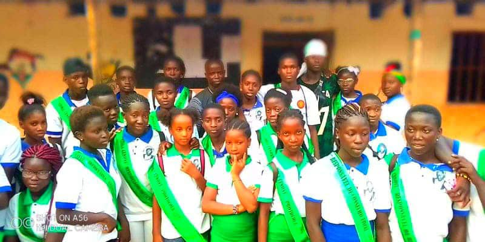

Complexo Escolar Nova Esperança – C9
Educação do Pré-Escolar ao Ensino Secundário
Educação do Pré-Escolar ao Ensino Secundário
O Complexo Escolar Nova Esperança – C9 é uma instituição de ensino localizada na Guiné-Bissau, dedicada a oferecer educação de qualidade, promovendo esperança, conhecimento e oportunidades para crianças e jovens.
O C9 foi fundado em 2018/2019 com uma missão simples, mas urgente: levar a educação para mais perto das crianças da zona de Djolo, que anteriormente tinham de caminhar horas todos os dias para chegar a uma escola.
A escola começou com cerca de 130 alunos, oferecendo ensino do pré-escolar à 6.ª classe.
Atualmente, atende mais de 600 alunos, do pré-escolar à 12.ª classe.
Cerca de 10% dos alunos não conseguem pagar as propinas, incluindo órfãos e crianças em situação de extrema vulnerabilidade.
Apesar dos recursos muito limitados, a escola continua a crescer devido à enorme necessidade existente.
Os alunos do C9 representam o futuro da Guiné-Bissau. A escola acolhe crianças e jovens de diferentes contextos sociais, promovendo igualdade, inclusão e esperança.
Complexo Escolar Nova Esperança – C9
Zona de Djolo, Guiné-Bissau
Email: contacto@c9-escola.gw
Telefone: +245 XXX XXX XXX